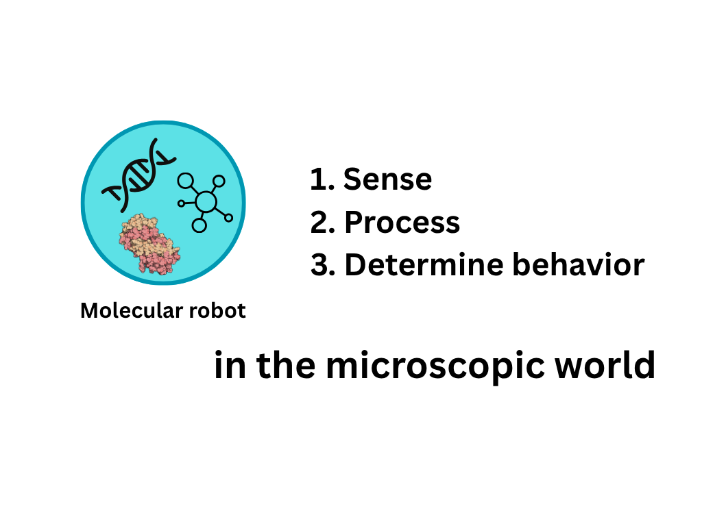
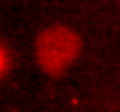
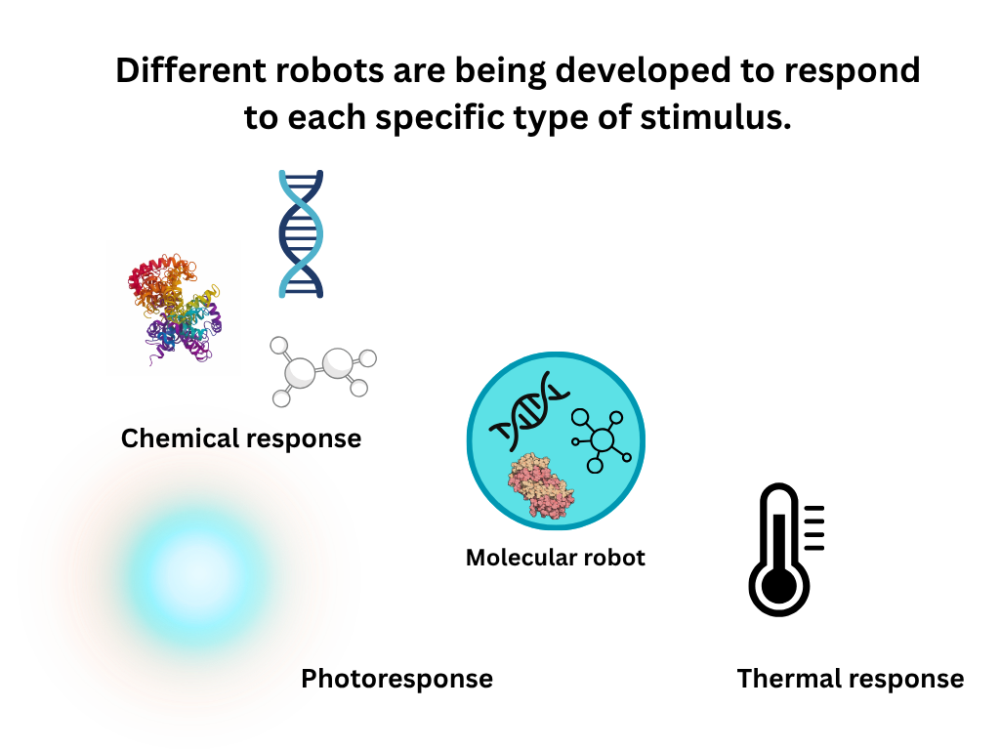
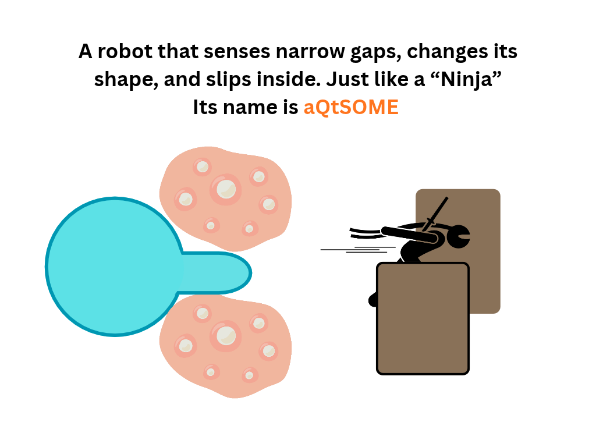
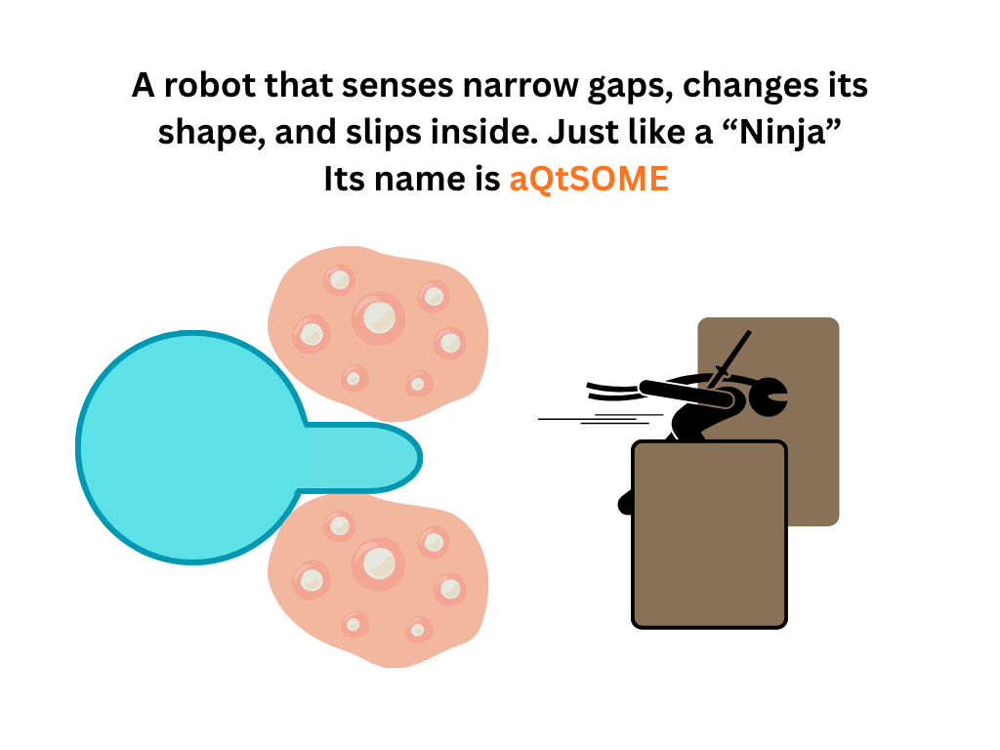

PROJECT SCHEMATICILLUSTRATION 01Upload
assets/home/overview-01.png
BIOMOD 2026 · KYUSHU UNIVERSITY ✦
A MECHANORESPONSIVE MOLECULAR ROBOT

assets/home/overview-01.png
assets/home/overview-02.png
assets/home/overview-03.png
assets/home/overview-04.png
In recent years, research on amoeba-type molecular robots that autonomously deform and move has advanced, and artificial cell systems that drive membrane deformation through DNA crosslinking have been reported. However, most of these require adding DNA strands from the outside for each actuation, or artificially controlling the timing of the reaction by light irradiation, and therefore cannot be considered truly autonomous. Focusing on this dependence on external control, the present study aims to build an amoeba-type molecular robot that responds autonomously to physical stimuli from its environment, based on a protein-based molecular design.
Specifically, inspired by leukocyte extravasation—in which a white blood cell squeezes through narrow gaps in the vessel wall to migrate—we reproduce its core function, passage through a narrow gap, using a giant unilamellar vesicle (GUV). We construct a synthetic GUV in which the membrane-tension-gated channel MscL is placed on the membrane as a mechanosensor, and the calcium/calmodulin-dependent actin-polymerizing protein INF2 is encapsulated inside together with actin. When the GUV is pushed into a narrow gap, the membrane tension rises at the leading edge and MscL opens. The calcium ions that flow in then activate INF2, promoting local actin polymerization at that site.
The originality of this design lies in feeding the mechanical sensing of a narrow gap directly back into actin polymerization, without requiring any externally imposed timing control. Moreover, no previous study has demonstrated narrow-gap passage as a module for artificial cell migration; if realized, it is expected to enable a wide range of applications, such as drug delivery systems that slip through intercellular gaps.
Read the full Project